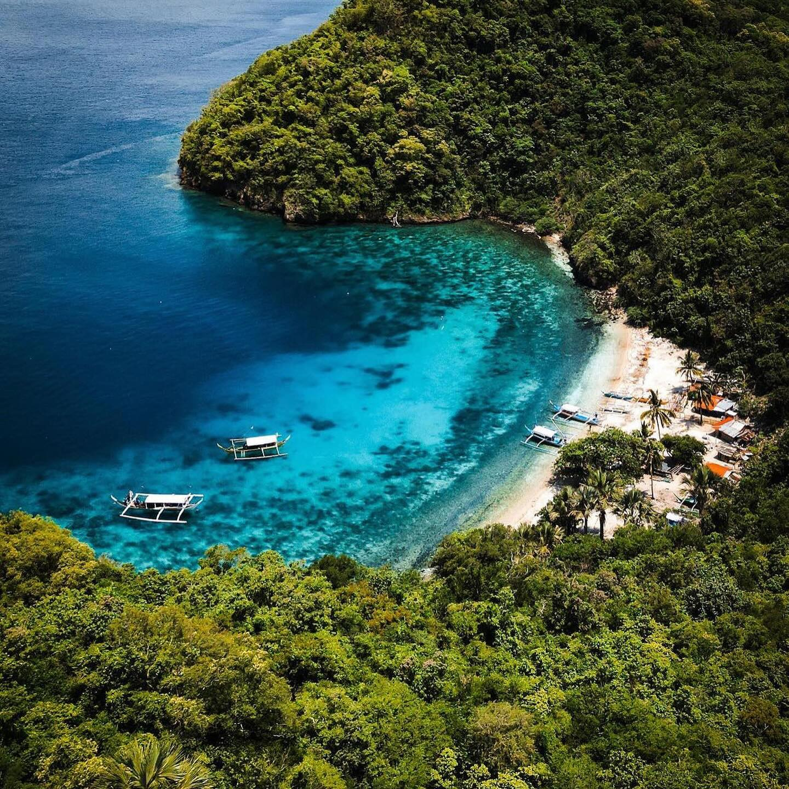
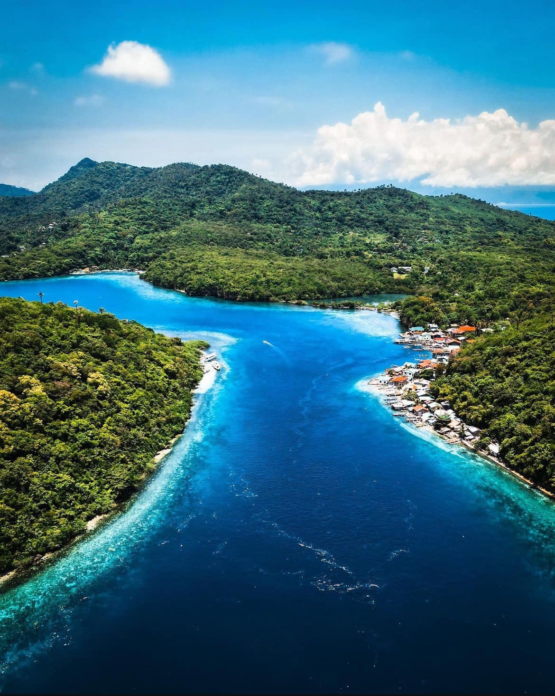
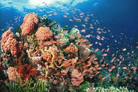

🤿 Free Diving in Mabini
Explore world-class dive sites with vibrant coral reefs, diverse marine life, and underwater photography opportunities.
What is Free Diving in Mabini?
Mabini, particularly Anilao, is one of Southeast Asia's premier diving destinations. With depths ranging from beginner-friendly 5–8 meters to advanced 30+ meter sites, divers encounter colorful coral gardens, schools of tropical fish, nudibranchs, and occasional larger species like rays and groupers. The calm waters and professional dive shops make it ideal for all skill levels.
Why Mabini? Close proximity to Manila (90 min drive), year-round diving season, affordable rates, and experienced local guides.
Best For: Certification courses, underwater photography, macro life exploration, recreational diving, and group trips.
🌊 Top Free Dive Sites
Anilao's famous shallow and deep-water reef systems

Layag-Layag Reef
One of the top reef dive sites with large rocks, coral formations, and abundant marine life. Known for good visibility.

Secret Bay
A shallow sandy site known for muck diving, where you can find rare creatures like nudibranchs, frogfish, and mimic octopus.

Cathedral Rock
A famous dive site that features soft corals, sponges, and many reef fish. A cross placed between the rocks makes it iconic.

Mainit Point
A rocky reef with strong currents and rich coral life. Home to many reef fish and best suited for intermediate to advanced divers.

Mainit Bubbles
A unique dive site where hot volcanic bubbles rise from the seabed, creating a rare underwater experience.

Caban Cove
A calm and sheltered dive site perfect for beginners and training. It has sandy bottoms, coral bommies, and gradual drop-offs.

Kirby’s Rock
A macro diving hotspot where you can see pygmy seahorses, frogfish, and lionfish. Ideal for underwater photography.
📋 What to Expect
A typical diving experience in Mabini
Meet at Dive Shop
Arrive 30 min early. Briefing on conditions, site, and safety. Equipment fitting (tank, BCD, wetsuit, fins).
Boat Ride
15–30 min trip to the dive site. Relax, chat with crew, and prepare mentally. Final descent briefing on the boat.
First Dive
40–50 minutes underwater. Guided tour with your DivesMaster. Check buoyancy, explore reef, enjoy the view.
Surface Interval
45 min break on boat. Light snacks, hydration, and log entry (for certification). Decompression time observed.
Second Dive
Another 40–50 minutes. Often shallower than the first dive. More relaxed and exploratory.
Return & Debrief
Back to shore, rinse gear. Grab a meal. Log book signed. Photos shared. Plan next dive!
🎯 Free Diving Tips & Guidelines
- Get Certified First: PADI/SSI certification (OW/AOW) required for independent diving. Courses available locally.
- Use Reef-Safe Sunscreen: Oxybenzone and octinoxate harm coral. Bring zinc-based sunscreen.
- Don't Touch the Reef: Look but don't grab. Gloves often banned in Marine Protected Areas.
- Respect Marine Life: No chasing, feeding, or harassing animals. Observe from distance.
- Plan Your Depth & Air: Discuss dive profile with DivesMaster. Monitor air consumption and ascend safely.
- Log Every Dive: Keep a logbook. Track sites, depth, marine life, and conditions for certification progress.
- Stay Hydrated: Dive dehydration is real. Drink water between dives.
- Check Weather: Strong winds and currents can cancel dives. Early morning dives often have best conditions.
Ready to Free Dive?
Book your free dive trip with one of our trusted local operators. Whether you're certified or new to free diving, we have something for everyone.
Find Dive Shops